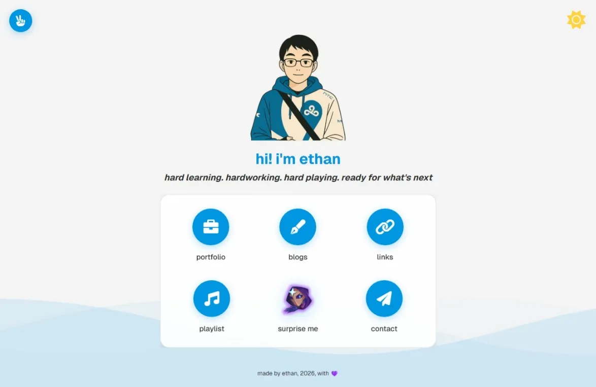
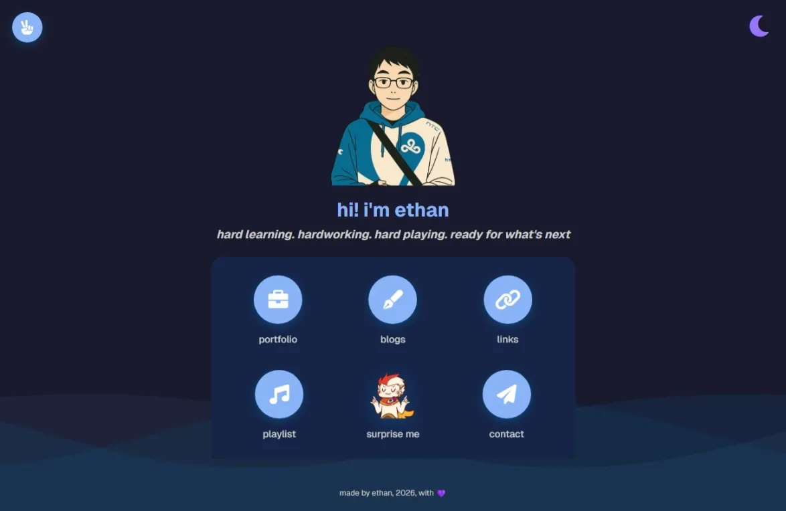
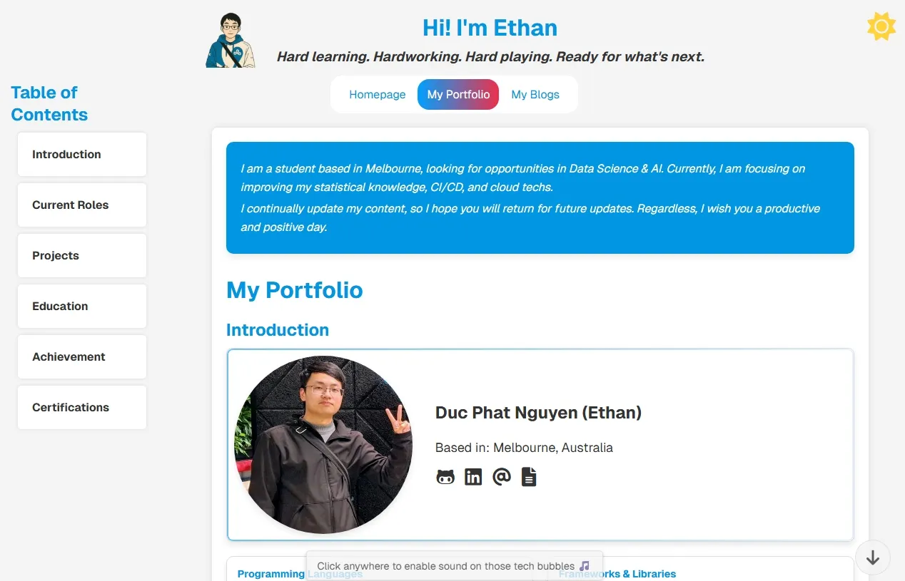
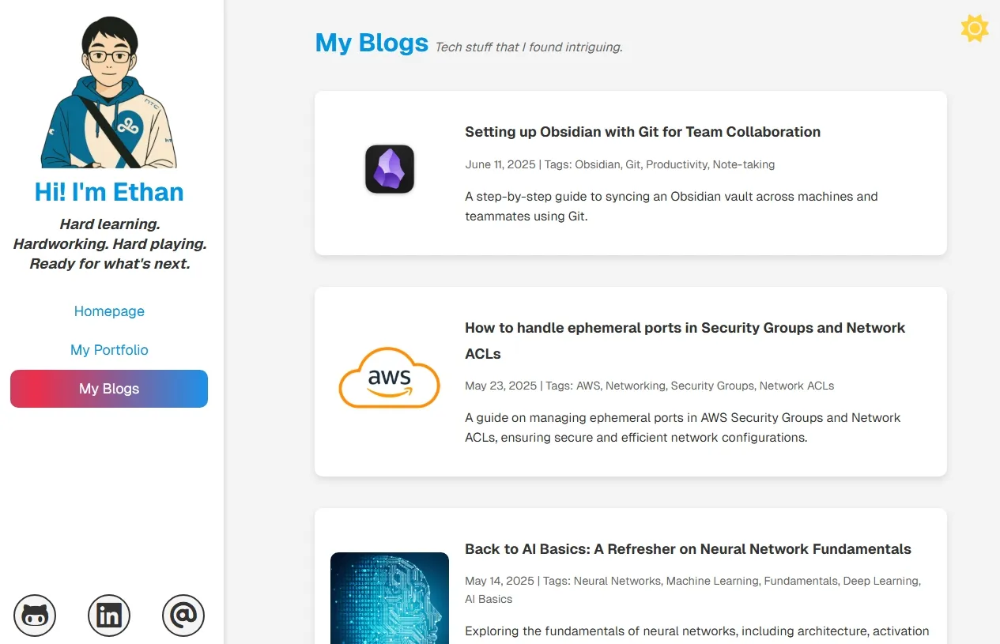
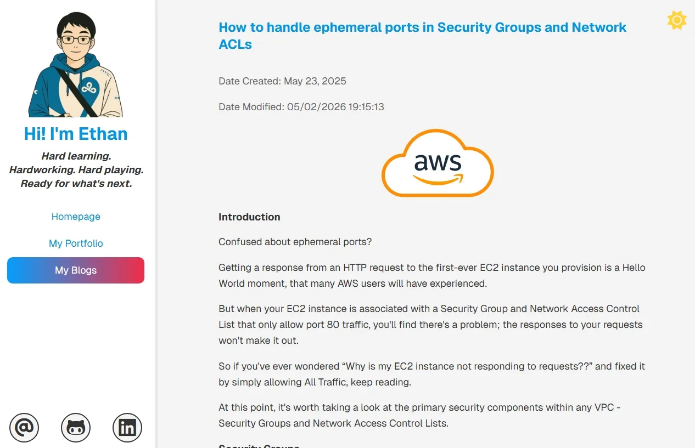
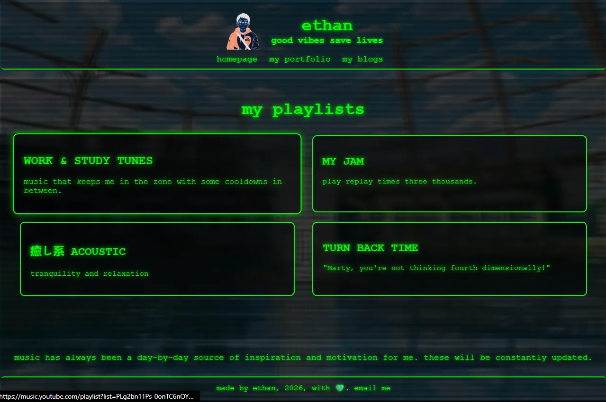
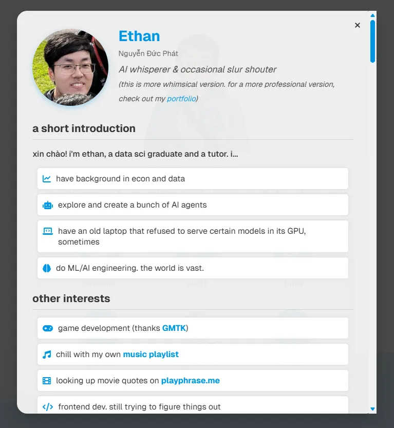
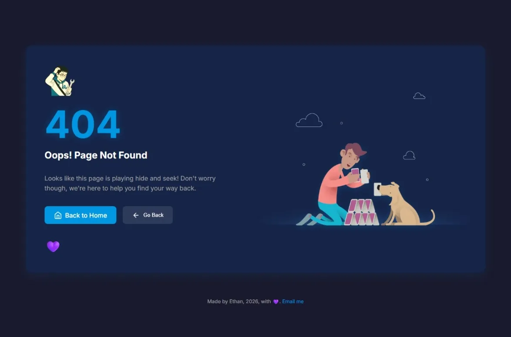

Plate 0 — The Archive
Folio I
2024 – 2026
The first iteration of this site · preserved as a record
The site you are looking at now is the second iteration. Before this, for two years, it lived in a different palette — Geist sans, soft waves, friendly blue. A CRT-terminal playlist page or bubbles that played a musical scale when you hovered them.
That version is gone from the live site, but kept here as eight plates. Each capture is something of thoughts and tears before the redesign.
Pl. 0.1 — Homepage · Paper

Homepage · paper
domus · light theme
Pl. 0.2 — Homepage · Night

Homepage · night
domus · dark theme
Pl. 0.3 — Portfolio

Portfolio
opus · bubbles played notes
Pl. 0.4 — Blog Index

Blog index
folia · sidebar layout
Pl. 0.5 — Blog Post

Blog post · typical
essay · geist body
Pl. 0.6 — Playlist

Playlist · CRT
cantus · terminal
Pl. 0.7 — About Modal

About · modal
vita · collage cascaded in
Pl. 0.8 — 404

Not Found · 404
erratum · bouncing heart